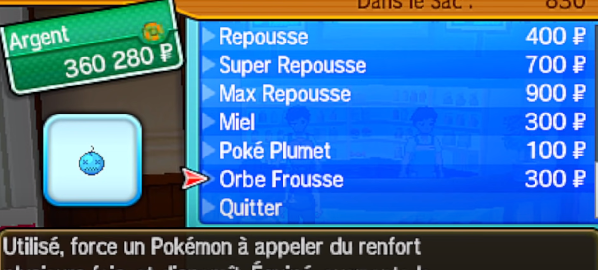

Qu'est-ce que l'Orbe Frousse ?
L'orbe frousse est un objet exclusif à la septième génération, Pokémon Soleil et Lune et Pokémon Ultra-Soleil et Ultra-Lune.

L'orbe frousse est un objet exclusif à la septième génération, Pokémon Soleil et Lune et Pokémon Ultra-Soleil et Ultra-Lune.
L'orbe frousse peut être acheter dans tous les centres Pokémon après avoir réussi l'épreuve de Kiawe sur l'île d'Akala.
